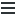
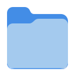
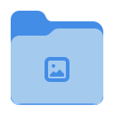

A little preview. A lot of personality.
Design concepts, not screenshots of a running Toddy OS build.



Desktop
PicturesToddy OS
YOUR DESKTOP. YOUR PACK.Less bloat.
More belly rubs.
A familiar GNOME desktop, a few essentials and your own bespectacled sidekick. The proposed dock is shown expanded; final shell behavior will be validated in the guest.
Need a paw?
I'm all ears. Mostly fur, but still.
Super + Space · configurable
Big ideas.
Short legs.
A compact place to ask, type or speak. Local AI or your chosen provider, with task progress and an explicit Stop control in the main app.
One tidy workspace, coming
up.
I handle the files. You handle
the treats.
✓ Created the project folder
○ Verifying the result · example task
Helpful by nature.
Nerd by choice.
The proposed task view makes actions visible. Permissions, verification and cancellation belong to the real execution path, never just the conversation.
Local brain.
Cloud brain.
Still your
dog.
Choose how Toddy thinks. Configure your own provider, run a compatible local model, or take your time.
No key? No problem. The desktop works without one.
How should Toddy help?
You can change this later in Settings.
New home.
Same needy genius.
Installer scenes introduce the real planned experience with a little Shih-tzu humor. Actual progress, errors and disk warnings take priority over the slideshow.